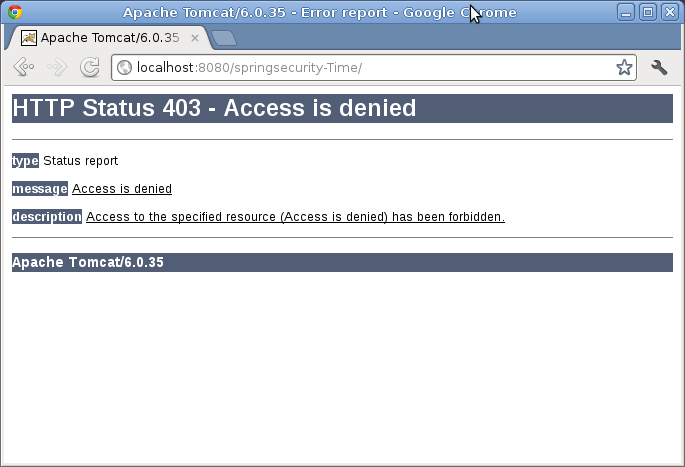
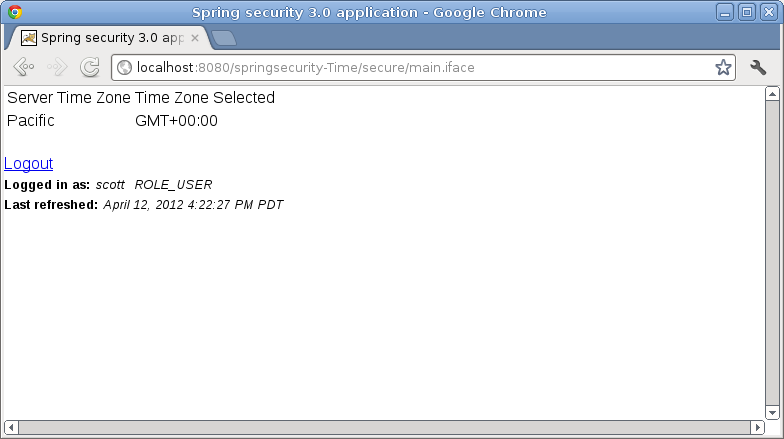

The ICEfaces + Spring Security Tutorial
Table of Contents
This tutorial will walk you through the process of using Spring Security for authentication of an ICEfaces/JSF web application. Additionally, Spring Security and ICEfaces components will be used to authorize access to different pages and functions in the application.
The application uses Spring Security 3.0 and ICEfaces 1.8. Initially, the application will present a login page to the user. The potential user can log in with one of several username/password pairs, and will be redirected to a page with details visible based on the users permission levels. Spring Security will ensure the user ID has been authenticated. The main page of the application shows time zone that the server exists in, as well as a Time Zone that the user has selected. If the User is authenticated in the supervisor role, he/she can see a field that shows the current time in both the server and user's time zones.
This tutorial will discuss the following topics related to Spring Security with ICEfaces:
Spring-Security 3 requires Spring Framework 3.0 to run. The application requires the following spring security jars:
Spring-Security 3 requires Spring Framework 3.0 to run. The application requires the following spring security jars:
Although the spring.jar is included, knowledge of Spring is not required for basic authentication and authorization using Spring Security.
The following entries will be added to your existing ICEfaces application web.xml:
<listener-class>
org.springframework.web.context.ContextLoaderListener
</listener-class>
</listener>
<!-- Spring Security -->
<filter>
<filter-name>springSecurityFilterChain</filter-name>
<filter-class>
org.springframework.web.filter.DelegatingFilterProxy
</filter-class>
</filter>
<filter-mapping>
<filter-name>springSecurityFilterChain</filter-name>
<url-pattern>/*</url-pattern>
</filter-mapping>
The org.springframework.web.context.ContextLoaderListener will load the Spring application context when the application starts up. This allows us to access Spring-managed beans
Spring Security uses servlet filters for authentication and authorization. The appropriate filter fetches authentication request information such as username and password, and passes this information to Spring Security's authentication manager, which is configured as a Spring bean. The filter-mapping "/*" ensures all requests will be processed by Spring Security filters.
A Spring ApplicationContext is essentially a registry of application objects. Spring Security 3.0 has revisited the namespace-based configuration and created a "beans" namespace element which substantially reduces the amount of xml in this file. For detail on how these tags work, please consult the Spring 3.0.x Security Spring Security documentation.
<xmlns:beans="http://www.springframework.org/schema/beans"
xmlns:xsi="http://www.w3.org/2001/XMLSchema-instance"
xsi:schemaLocation="http://www.springframework.org/schema/beans
http://www.springframework.org/schema/beans/spring-beans-3.0.xsd
http://www.springframework.org/schema/security
http://www.springframework.org/schema/security/spring-security-3.0.xsd" >
<http>
<intercept-url pattern="/login.jsp*" access="IS_AUTHENTICATED_ANONYMOUSLY"/>
<intercept-url pattern="/**" access="ROLE_USER" />
<form-login />
<logout />
</httpgt;
<authentication-manager alias="authenticationManager" >
<authentication-provider>
<user-service>
<user name="steve"; password="icefaces authorities="ROLE_USER, ROLE_SUPERVISOR" />
<user name="philip" password="koala" authorities="ROLE_USER, ROLE_SUPERVISOR" />
<user name="dianne" password="emu" authorities="" />
<user name="scott" password="wombat" authorities="ROLE_USER" />
</user-service>
</authentication-provider>
</authentication-manager>
<beans:bean
id="renderManager"
class="com.icesoft.faces.async.render.RenderManager"
scope="application" />
<beans:bean
id="timeZoneBean"
class="com.icesoft.icefaces.samples.TimeZoneBean"
scope="request" >
<beans:property name="renderManager"
ref="renderManager" />
</beans:bean>
<beans:bean
id="clientController"
class="com.icesoft.icefaces.samples.security.ClientController"
scope="application" >
<beans:property
name="renderManager"
ref="renderManager" />
</beans:bean>
<!-- Managed Bean for dynamic style examples -->
<beans:bean
id="styleBean"
class="com.icesoft.icefaces.samples.security.StyleBean"
scope="application" />
<beans:bean
id="ReadmeBean"
class="com.icesoft.icefaces.samples.security.ReadmeBean"
scope="request" />
<beans:bean
id="user"
class="com.icesoft.icefaces.samples.security.UserBean"
scope="session" >
<beans:property
name="clientController"
ref="clientController" />
<beans:property
name="authenticationManager"
ref="authenticationManager" />
</beans:bean>
</beans:beans>
If you are familiar with previous versions of Spring Security, you can probably guess what's going on here. The <http> element is responsible for creating a FilterChainProxy and the filter beans which it uses. Common issues with acegi like incorrect filter ordering are no longer an issue as the filter positions are predefined.
The <intercept-url> element is used to define the set of URL patterns that the application is interested in and to configure how they should be handled. In this case, all pages are viewable with ROLE_USER, but certain fields on that page are viewable only with ROLE_SUPERVISOR.
The <form-login> element is used to add filters to provide authentication on demand. The namespace now provides common defaults.
The <logout> element adds a LogoutFilter to the filter stack. The logout-success-url is the URL a user will be taken to after logging out.
The <authenticationManager> element directly configures some simple authentication details directly via XML.
User is the representation of a user in our bean logic. In a more sophisticated application you would likely add other properties such as first name, last name, email, etc.
public class User implements Renderable, HttpSessionListener {
private static Log log = LogFactory.getLog(User.class);
protected String userName;
protected String role;
protected int roleNumber;
private AuthenticationManager am;
protected ClientController clientController;
// Local instance of the persistent faces state, required by the render api
// this var must be thread local.
private PersistentFacesState persistentFacesState;
private static boolean initialized = false;
public User(){
persistentFacesState = PersistentFacesState.getInstance();
log.debug("constructor " + persistentFacesState.toString());
// For some reason, this flag is always true after the first login, even though User bean is session scoped.
// if(!initialized){
initializeApplication();
// initialized = true;
// }
}
public void initializeApplication(){
// ((ClientController)persistentFacesState.getFacesContext().getApplication().getVariableResolver().resolveVariable(persistentFacesState.getFacesContext(), "clientController")).init();
SecurityContext sc = SecurityContextHolder.getContext();
Authentication a = sc.getAuthentication();
role = "";
if (a != null) {
userName = a.getName();
Collection gas = a.getAuthorities();
Iterator i = gas.iterator();
GrantedAuthority ga;
while (i.hasNext()) {
ga = (GrantedAuthority) i.next();
role += ga.getAuthority() + " ";
}
}
}
//Getters
/**
* Runnable interface call back for this class persistent faces tate.
*
* @return persistent faces state of this class.
*/
public PersistentFacesState getState() { return persistentFacesState; }
public String getUserName() {
persistentFacesState = PersistentFacesState.getInstance();
return userName;
}
public String getRole() { return role; }
public ClientController getClientController(){ return clientController; }
//Setters
public void setUserName(String userName) { this.userName = userName; }
public void setRole(String role) { this.role = role; }
public void setClientController(ClientController clientController) { this.clientController = clientController; }
/**
* Callback method that is called if any exception occurs during an attempt
* to render this Renderable.
*
* @param renderingException The exception that occurred when attempting
* to render this Renderable.
*/
public void renderingException(RenderingException renderingException) {
if (log.isDebugEnabled() &&
renderingException instanceof TransientRenderingException ){
log.debug("Transient Rendering exception:", renderingException);
clientController.removeFromRenderer(this);
}
else if(renderingException instanceof FatalRenderingException){
if (log.isDebugEnabled()) {
log.debug("Fatal rendering exception: ", renderingException);
}
clientController.removeFromRenderer(this);
}
}
public void sessionCreated(HttpSessionEvent httpSessionEvent) {
}
public void sessionDestroyed(HttpSessionEvent httpSessionEvent) {
if (log.isDebugEnabled()){
log.debug("Servlet Context Distroyed");
}
clientController.removeFromRenderer(this);
log.debug("Removing User from Renderer");
}
public AuthenticationManager getAm() {
return am;
}
public void setAm(AuthenticationManager am) {
this.am = am;
}
}
We have four users with the following username/password/roles:
<user-service> A user enters our JSF/ICEfaces application via index.jsp.
<%
response.sendRedirect("./secure/main.iface");
%>
This redirects us to a URL which all authenticated users can access, but which only users with ROLE_SUPERVISOR can view the server time and serverTimeZone fields.
<f:view xmlns:h="http://java.sun.com/jsf/html"
xmlns:f="http://java.sun.com/jsf/core"
xmlns:jsp="http://java.sun.com/JSP/Page"
xmlns:ice="http://www.icesoft.com/icefaces/component">
<ice:outputDeclaration doctypeRoot="HTML"
doctypePublic="-//W3C//DTD HTML 4.01 Transitional//EN"
doctypeSystem="http://www.w3.org/TR/html4/loose.dtd"/>
<f:loadBundle basename="com.icesoft.icefaces.samples.security.resources.messages"
var="msgs"/>
<html>
<head>
<meta http-equiv="Content-Type"
content="text/html; charset=iso-8859-1"></meta>
<title>
Spring security 3.0 application
</title>
<h:outputText value="#{styleBean.style}"
escape="false"/>
<link href="./../css/style.css"
rel="stylesheet"
type="text/css"/>
</head>
<body>
<ice:form id="iceform">
<ice:panelGrid columns="2">
<ice:outputText style="font-weight:600" value="Server Time Zone"/>
<ice:outputText style="font-weight:600" value="Time Zone Selected "/>
<ice:outputText value="#{timeZoneBean.serverTimeZoneName}"/>
<ice:outputText value="#{timeZoneBean.selectedTimeZoneName}"/>
<ice:outputText style="font-weight:800" value="#{timeZoneBean.serverTime}" renderedOnUserRole="ROLE_SUPERVISOR"/>
<ice:outputText style="font-weight:800" value="#{timeZoneBean.selectedTime}" renderedOnUserRole="ROLE_SUPERVISOR"/>
</ice:panelGrid>
<br/>
<a href="../j_spring_security_logout" >Logout</a>
<br/>
<ice:outputText styleClass="loggedinLabelText"
value="#{msgs['Header.login.label']}"/>
<ice:outputText styleClass="loggedinValueText"
value="#{user.userName}"/>
<ice:outputText styleClass="loggedinValueText"
value=" #{user.role}"/>
<br/>
<ice:outputText styleClass="timestampLabelText"
value="#{msgs['Header.timestamp.label']}"/>
<ice:outputText styleClass="timestampValueText"
value="#{clientController.serverTime}">
<f:convertDateTime dateStyle="long"
timeStyle="long"/>
</ice:outputText>
</ice:form>
</body>
</html>
</f:view>
In Spring Security 3, form based authentication can be auto generated by Spring since we didn't set a URL for a login page in the <http> element. The namespace allows plenty of opportunity to customize these options. See here
All authenticated users can access main.jspx, but only those authenticated with ROLE_SUPERVISOR can view the current server time or client time fields. Logging in with username "Steve" shows the page with the server and client time fields visible.
Failed attempts at page authentication in the sample have an automated error message generated as shown below:
Logging in with the "deanna" username will fail with the following error, because that account has no ROLE assigned available to view any page or field.
The final username of interest is "scott" who has an account, but "ROLE_USER" authorization to view the page and selected timezones, but not to see the server or selected client time. Selected elements on a page can be completely added or removed with the renderedOnUserRole attribute. Interactive elements can be enabled or disabled with the enabledOnUserRole attribute.
This concludes the tutorial. You may view the source code by following the links below.
| Example | Source | Notes |
| springsecurity-Time | springsecurity-Time source code | Spring Security form-login using ICEfaces enabledOnUserRole/renderedOnUserRole attribute. |
Copyright 2012 ICEsoft Technologies Inc. All rights reserved.